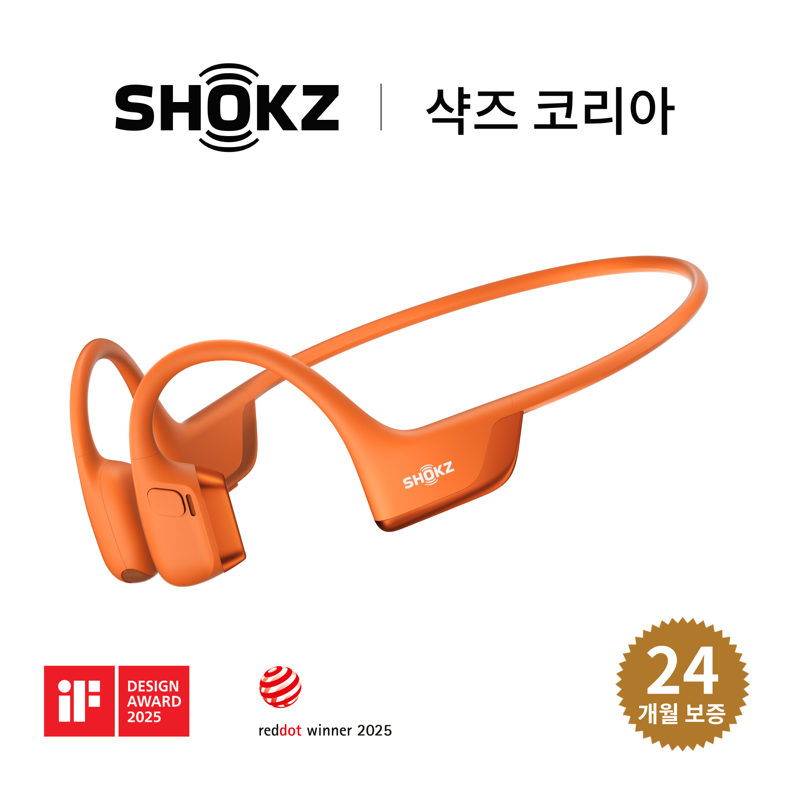

The Rise of Korea’s Night Running Crews
If you visit Seoul’s Yeouido or Banpo Hangang Park on any weeknight between 7:30 PM and 10:00 PM, you’ll witness one of Korea’s fastest-growing lifestyle shifts: the Running Crew phenomenon. Groups of twenty to fifty runners pace along the shared pedestrian-and-cyclist river lanes. Because Korean river paths share space with high-speed road cyclists, noise-canceling earbuds are genuinely dangerous at night.
That exact safety requirement—combined with Korea’s love for Y2K silver-mesh sneaker aesthetics—explains why two products dominate every post-run coffee meetup in Seoul: the Shokz OpenRun Pro 2 and the Nike Initiator. Over the past four weeks, we logged 120 kilometers testing both side by side.


Part 1: Shokz OpenRun Pro 2 Review — Why DualPitch Solves the Bone-Conduction Bass Problem
Earlier generations of bone-conduction headphones suffered from two notorious trade-offs: thin, tinny bass and an annoying "tickling" vibration against your cheekbones when you turned the volume past 70%. The Shokz OpenRun Pro 2 completely re-engineers the acoustic chamber with DualPitch Technology.
Instead of forcing a single bone-conduction transducer to handle both highs and lows, Shokz split the workload: an ultra-precise bone-conduction driver handles crisp mids and vocals, while a dedicated low-frequency air-conduction speaker directs punchy bass toward your ear canal without sealing it shut.
- Zero Ear Canal Fatigue: At just 30.3 grams with an ergonomic memory-titanium band, it never slips even during humid August and September tempo runs in Korea.
- Finally Standardized on USB-C: Gone is the proprietary magnetic charging cable you always forgot at home. A weather-sealed USB-C port delivers 2.5 hours of playback from a 5-minute quick charge and up to 12 hours of total battery life.
- Situational Awareness on Shared Paths: You hear approaching bicycles, crosswalk signals, and running partners clearly while still enjoying full-bodied K-pop or podcast audio.


Part 2: Nike Initiator Review — The Under-$85 Retro Runner That Outperforms Its Price Tag
While $250 carbon-plated marathon shoes grab headlines, most recreational runners and travelers actually need a stable, breathable, durable trainer that doesn’t feel unstable when walking down subway stairs. Enter the Nike Initiator.
Originally a sleeper hit in Korea’s fashion districts (Seongsu-dong and Hongdae) for its retro 2000s metallic overlays, the Nike Initiator quickly earned respect as a legitimate daily trainer:
- Supportive Centering Overlays: Unlike flimsy knit uppers that let your foot roll on uneven pavement, the Initiator’s stitched synthetic overlays lock your midfoot securely over the footbed.
- All-Day Breathability: The wide-gauge open mesh toe box vents heat rapidly—crucial both for 5K–10K runs and full days of walking around Seoul or Busan.
- Unbeatable Value on Amazon: Priced at roughly half the cost of flagship running shoes, you can pick up two colorways (White/Black/Silver for daily wear and Mint/Cream for workouts) without breaking the bank.
Head-to-Head Spec & Buying Comparison
| Product | Category | Key Spec Highlights | Best For | Amazon Availability |
|---|---|---|---|---|
| Shokz OpenRun Pro 2 | Open-Ear Sport Headphones | DualPitch (Bone + Air), IP55 Sweatproof, 12-Hr Battery, USB-C Fast Charge, 30.3g | Outdoor Running, Cycling, Commuting Safety | 🛒 Check Price on Amazon |
| Nike Initiator | Daily Running & Walking Shoe | Breathable Mesh Upper, Supportive Overlays, Cushioned Foam Midsole, Flex-Groove Outsole | 5K–10K Runs, Gym Training, 20K-Step City Travel | 🛒 Check Price on Amazon |
| Shokz OpenRun (Standard) | Budget Bone Conduction | 8th-Gen Bone Conduction, IP67 Waterproof, 8-Hr Battery, 26g | Runners Wanting Sub-$130 Waterproof Audio | 🛒 View on Amazon |
Pros & Cons After 4 Weeks of Testing
✅ What We Loved (Pros)
- Shokz OpenRun Pro 2: Dramatically richer low-end bass with almost zero cheekbone vibration; USB-C charging means one cable for phone and headphones.
- Nike Initiator: Exceptional arch and midfoot stability right out of the box; zero break-in blisters across 120 km of testing.
- Versatility: Both transition seamlessly from evening river runs to weekend travel in Korea.
⚠️ Things to Keep in Mind (Cons)
- Shokz OpenRun Pro 2: Rated IP55 (sweat and rain resistant, but not meant for lap swimming—use OpenSwim Pro for pool use).
- Nike Initiator: Fits slightly snug in the forefoot; if you have wide feet (2E) or wear thick cushioned running socks, order 0.5 size up.
Final Verdict: Should You Buy This Combo?
If you want to run outdoors safely without feeling isolated from traffic or bicycles—and you want a dependable, stylish sneaker that handles both 10K pavement runs and all-day walking—the Shokz OpenRun Pro 2 + Nike Initiator pairing is the single best value upgrade you can make in 2026.